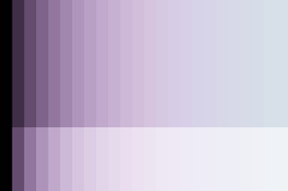
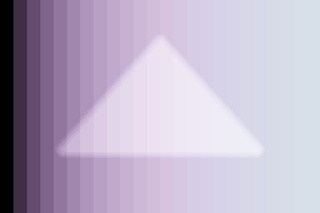
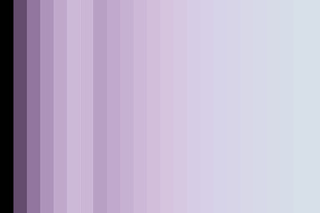

Mask shapes from words¶
Companion to RFC-029 / ADR-084. The build-by-words mapping for the agent: spatial English on the left, the
mask_specdict on the right. Sister to themask-applicable-controls.mdguide — that one tells you which primitive you can apply through a mask; this one tells you how to construct the mask from a phrase.
When to use this¶
The agent calls apply_primitive with an inline mask_spec argument when the photographer's intent is spatial — affect a region, not just a tonal range. "Lift the bottom third by half a stop" is spatial. "Lift the shadows" is tonal (no mask needed; the primitive's parameter handles it).
This guide gives you a stable vocabulary so the same phrase produces the same mask_spec across sessions. It's not exhaustive — the agent's job is to reason about what the photographer actually means and pick parameters accordingly. Treat the table as a foundation; extrapolate when the phrase doesn't match exactly.
Coordinate system¶
All mask coordinates are normalized to [0, 1] in image space:
x = 0is the left edge,x = 1is the right edgey = 0is the top edge,y = 1is the bottom edge
Origin is top-left, matching darktable's convention. Coordinates are unitless — the same mask_spec applies to a 4000×3000 photo and a 1024×768 thumbnail identically.
Shape choice: rectangle vs gradient vs ellipse vs path¶
| Intent | Shape | Why |
|---|---|---|
| Hard edge ("the bottom third, no feathering") | rectangle | Sharp boundary, full opacity inside, zero outside |
| Smooth transition ("a gentle fade from top") | gradient | Linear falloff across the image; one side bright, other dark |
| Circular subject region ("around the face") | ellipse | Radial falloff with feathering; tracks circular subjects |
| Arbitrary outline ("the silhouette of the fish") | path | N-vertex closed polygon; usually from RFC-026 AI subject detection or human-supplied vertices |
Two questions guide the choice:
- Does the intent describe a half-plane or a region? Half-plane → gradient. Region → rectangle / ellipse / path.
- Should the boundary be hard or feathered? Hard → rectangle. Feathered → gradient (for half-plane) or ellipse (for region) or path-with-border.
If the photographer says "the bottom third" without qualifying, default to gradient (it's almost always what they mean — a smooth transition feels natural).
Phrase → spec table¶
Halves and thirds (gradients)¶
| Phrase | Spec |
|---|---|
| "Bottom half" / "lower half" | {dt_form: "gradient", dt_params: {anchor_x: 0.5, anchor_y: 0.5, rotation: 180, compression: 0.5, state: 2}} (light side is bottom; rotation 180 = horizontal axis with light below) |
| "Top half" / "upper half" | {dt_form: "gradient", dt_params: {anchor_x: 0.5, anchor_y: 0.5, rotation: 0, compression: 0.5, state: 2}} (rotation 0 = light side on top — verified against shipped gradient_top_dampen_highlights) |
| "Bottom third" | {dt_form: "gradient", dt_params: {anchor_x: 0.5, anchor_y: 0.67, rotation: 180, compression: 0.5, state: 2}} |
| "Top third" | {dt_form: "gradient", dt_params: {anchor_x: 0.5, anchor_y: 0.33, rotation: 0, compression: 0.5, state: 2}} |
| "Bottom quarter" | {dt_form: "gradient", dt_params: {anchor_x: 0.5, anchor_y: 0.75, rotation: 180, compression: 0.5, state: 2}} |
| "Top quarter" | {dt_form: "gradient", dt_params: {anchor_x: 0.5, anchor_y: 0.25, rotation: 0, compression: 0.5, state: 2}} |
| "Left half" | {dt_form: "gradient", dt_params: {anchor_x: 0.5, anchor_y: 0.5, rotation: 90, compression: 0.5, state: 2}} (rotation 90 = vertical axis, light side on left) |
| "Right half" | {dt_form: "gradient", dt_params: {anchor_x: 0.5, anchor_y: 0.5, rotation: 270, compression: 0.5, state: 2}} |
| "Left third" | {dt_form: "gradient", dt_params: {anchor_x: 0.33, anchor_y: 0.5, rotation: 90, compression: 0.5, state: 2}} |
| "Right third" | {dt_form: "gradient", dt_params: {anchor_x: 0.67, anchor_y: 0.5, rotation: 270, compression: 0.5, state: 2}} |
Hard-edged regions (rectangles)¶
Use rectangles when the photographer wants a crisp boundary, not a smooth fade. Common in cinematic crops, letterbox effects, and "exactly this region."
| Phrase | Spec |
|---|---|
| "Bottom third (hard edge)" | {dt_form: "rectangle", dt_params: {x0: 0, y0: 0.67, x1: 1, y1: 1, border: 0.0}} |
| "Top half (hard edge)" | {dt_form: "rectangle", dt_params: {x0: 0, y0: 0, x1: 1, y1: 0.5, border: 0.0}} |
| "Center horizontal band" | {dt_form: "rectangle", dt_params: {x0: 0, y0: 0.33, x1: 1, y1: 0.67, border: 0.0}} |
| "Letterbox top band (10%)" | {dt_form: "rectangle", dt_params: {x0: 0, y0: 0, x1: 1, y1: 0.1, border: 0.0}} |
| "Letterbox bottom band (10%)" | {dt_form: "rectangle", dt_params: {x0: 0, y0: 0.9, x1: 1, y1: 1, border: 0.0}} |
| "Center square" | {dt_form: "rectangle", dt_params: {x0: 0.25, y0: 0.25, x1: 0.75, y1: 0.75, border: 0.02}} |
| "Upper-left quadrant" | {dt_form: "rectangle", dt_params: {x0: 0, y0: 0, x1: 0.5, y1: 0.5, border: 0.0}} |
Circles / ellipses (subject-centered regions)¶
Use ellipses for "around the X" — face, subject, focal point. Default to feathering (border: 0.05 or higher) to avoid hard circular edges.
| Phrase | Spec |
|---|---|
| "Center circle, small" | {dt_form: "ellipse", dt_params: {center_x: 0.5, center_y: 0.5, radius_x: 0.15, radius_y: 0.15, border: 0.05}} |
| "Center circle, medium" | {dt_form: "ellipse", dt_params: {center_x: 0.5, center_y: 0.5, radius_x: 0.3, radius_y: 0.3, border: 0.08}} |
| "Center circle, large" | {dt_form: "ellipse", dt_params: {center_x: 0.5, center_y: 0.5, radius_x: 0.45, radius_y: 0.45, border: 0.1}} |
| "Subject upper-left rule-of-thirds" | {dt_form: "ellipse", dt_params: {center_x: 0.33, center_y: 0.33, radius_x: 0.2, radius_y: 0.2, border: 0.06}} |
| "Subject upper-right rule-of-thirds" | {dt_form: "ellipse", dt_params: {center_x: 0.67, center_y: 0.33, radius_x: 0.2, radius_y: 0.2, border: 0.06}} |
| "Subject lower-left rule-of-thirds" | {dt_form: "ellipse", dt_params: {center_x: 0.33, center_y: 0.67, radius_x: 0.2, radius_y: 0.2, border: 0.06}} |
| "Subject lower-right rule-of-thirds" | {dt_form: "ellipse", dt_params: {center_x: 0.67, center_y: 0.67, radius_x: 0.2, radius_y: 0.2, border: 0.06}} |
| "Tall narrow oval (portrait subject)" | {dt_form: "ellipse", dt_params: {center_x: 0.5, center_y: 0.5, radius_x: 0.2, radius_y: 0.4, border: 0.08}} |
| "Wide flat oval (landscape mid-band)" | {dt_form: "ellipse", dt_params: {center_x: 0.5, center_y: 0.5, radius_x: 0.45, radius_y: 0.15, border: 0.08}} |
Diagonals (rotated gradients)¶
Less common but useful for off-axis lighting situations.
| Phrase | Spec |
|---|---|
| "Diagonal, top-left dim" (light side bottom-right) | {dt_form: "gradient", dt_params: {anchor_x: 0.5, anchor_y: 0.5, rotation: 225, compression: 0.5, state: 2}} |
| "Diagonal, top-right dim" (light side bottom-left) | {dt_form: "gradient", dt_params: {anchor_x: 0.5, anchor_y: 0.5, rotation: 135, compression: 0.5, state: 2}} |
| "Diagonal, bottom-left dim" (light side top-right) | {dt_form: "gradient", dt_params: {anchor_x: 0.5, anchor_y: 0.5, rotation: 315, compression: 0.5, state: 2}} |
| "Diagonal, bottom-right dim" (light side top-left) | {dt_form: "gradient", dt_params: {anchor_x: 0.5, anchor_y: 0.5, rotation: 45, compression: 0.5, state: 2}} |
Polygons (paths)¶
Path forms come from two sources: AI subject detection (RFC-026) and human-supplied vertex lists. The agent doesn't typically construct paths from words — it receives them from a provider tool or from explicit photographer input.
// Triangle in the upper half (programmatic example)
{
"dt_form": "path",
"dt_params": {
"vertices": [[0.5, 0.1], [0.8, 0.4], [0.2, 0.4]],
"border": 0.04
}
}
When RFC-026 lands, the AI provider returns a polygon for "the fish" / "the person face" / etc.; the agent wraps it as a path-form mask_spec and applies primitives through it.
Parameter cheat sheet¶
Gradient (dt_form: "gradient")¶
anchor_x,anchor_y: where the gradient line crosses (the 50% point of the falloff). For a "bottom third" gradient,anchor_y = 0.67puts the transition line ⅔ down.rotation(degrees): orientation of the gradient axis.0= horizontal axis with the light side on top (verified against shippedgradient_top_dampen_highlights);90= vertical axis with light side on the left;180= horizontal with light on the bottom;270= vertical with light on the right. Rotate by 45° for diagonals (e.g.,45= light on bottom-right).compression(default0.5for image-spanning thirds/halves): controls falloff width.0.5= sharper transition (half the image, recommended for crisp third/half regions);1.0= full-image falloff (very smooth);2.0= extends beyond image edges (extremely soft).state(default2= sigmoidal):1= linear falloff (sharp),2= sigmoidal (smooth, recommended for natural-looking masks).
Ellipse (dt_form: "ellipse")¶
center_x,center_y: ellipse center, normalized [0, 1].radius_x,radius_y: ellipse half-widths. Equal values = circle.0.15is a small mask,0.45is a large one.border(default0.05): feathering width.0.0= hard edge (rare for circles);0.05–0.10= natural feathering;>0.15= very soft.rotation(default0): rotation in degrees. Only relevant for non-circular ellipses.flags(default proportional):1= border scales with shape;0= border is a fixed pixel distance (rarely needed).
Rectangle (dt_form: "rectangle")¶
x0,y0: top-left corner.x1,y1: bottom-right corner.border(default0.02): feathering applied to all sides.0.0= hard edge;0.02= subtle softening.
Path (dt_form: "path")¶
vertices: list of[x, y]pairs, normalized [0, 1], closed implicitly (last connects to first).border(default0.02): feathering uniform on all sides.- Minimum 3 vertices. Typical AI-subject masks have 50–500 vertices after Douglas-Peucker simplification at the provider boundary (RFC-026).
Refining masks with range filters (RFC-024 / ADR-085)¶
The shapes above describe the region of an image to affect. Sometimes that's not enough — the photographer wants "the bottom third but only the dark pixels" or "the subject but only the warm tones." Pixel-level refinement happens via the optional range_filter field on mask_spec.
mask_spec = {
// Spatial component (optional)
"dt_form": "gradient",
"dt_params": {"anchor_y": 0.67, "rotation": 180, "compression": 0.5, "state": 2},
// Pixel-level refinement (optional)
"range_filter": {
"kind": "luminance", // or "color_h" / "color_s" / "color_l"
"min": 0.0, // band lower bound, [0..1]
"max": 0.3, // band upper bound, [0..1]
"feather": 0.05, // ramp width on each edge
"invert": false // true = OUTSIDE the range becomes the mask
}
}
Three valid combinations¶
dt_form |
range_filter |
What you get |
|---|---|---|
| present | absent | drawn mask only — affects the spatial region (RFC-029 / ADR-084) |
| absent | present | parametric mask only — affects all pixels matching the range, anywhere |
| present | present | drawn AND parametric (intersection) — affects pixels matching the range, within the spatial region |
The third combination is the workflow you usually want: "lift the bottom third's shadows" = drawn gradient bottom-third + luminance shadows filter. The drawn mask localizes; the range filter selects which pixels in that locale receive the edit.
range_filter.kind options¶
kind |
What it filters on | Notes |
|---|---|---|
luminance |
Pixel brightness, [0..1] | Universal — works in any color space. Most common. |
color_h |
HSL hue, [0..1] (red≈0, green≈0.33, blue≈0.66) | Sets blend_cst to HSL automatically |
color_s |
HSL saturation, [0..1] | Mute saturated colors / preserve only desaturated, etc. |
color_l |
HSL lightness | Different from luminance; HSL-specific lightness channel |
range_filter.{min, max, feather} mapping¶
The agent provides a band; the encoder constructs a 4-control-point trapezoid:
- Below
min - feather: outside (mask = 0) min - feather → min: ramp up (0 → 1)min → max: inside (mask = 1)max → max + feather: ramp down (1 → 0)- Above
max + feather: outside (mask = 0)
feather: 0 gives hard edges (rare); feather: 0.05–0.10 gives natural soft transitions; feather: 0 with sharp min == max is essentially a single-tone selection.
Example refinement phrases¶
| Phrase | Spec |
|---|---|
| "Lift the bottom third's shadows" | {dt_form: "gradient", dt_params: {anchor_y: 0.67, rotation: 180, compression: 0.5, state: 2}, range_filter: {kind: "luminance", min: 0.0, max: 0.3, feather: 0.05}} |
| "Brighten the highlights of the subject" | {dt_form: "ellipse", dt_params: {center_x: 0.5, center_y: 0.5, radius_x: 0.3, radius_y: 0.3, border: 0.08}, range_filter: {kind: "luminance", min: 0.7, max: 1.0, feather: 0.05}} |
| "Deepen the blue tones in the upper half" | {dt_form: "gradient", dt_params: {anchor_y: 0.5, rotation: 0, compression: 0.5, state: 2}, range_filter: {kind: "color_h", min: 0.55, max: 0.7, feather: 0.05}} |
| "Mute the saturated reds in the photo" (no spatial mask) | {range_filter: {kind: "color_s", min: 0.6, max: 1.0, feather: 0.05}} (parametric only — no dt_form) |
| "Affect everything except the shadows" (invert) | {range_filter: {kind: "luminance", min: 0.0, max: 0.3, feather: 0.05, invert: true}} |
When to combine vs. when to use just one¶
- Just
dt_form: when the intent is purely spatial — "the bottom third," "around the subject," "the upper-left corner." - Just
range_filter: when the intent is purely tonal/color — "all the dark pixels," "all the blues," regardless of where they are. - Both: when the intent is "this region's specific pixels" — the most common Lightroom range-mask use case. Compose with AND (intersection); the edit applies only where both conditions are true.
Visual reference¶
Each row below renders exposure +1.0 through one shape from the table above, against the synthetic grayscale ramp. The brightened region reveals where the mask is on; everything else stays at the ramp's baseline tone.
Reference renders for visual comparison:
| Reference | Description |
|---|---|
| Baseline ramp — no effect, no mask. The unmodified target. | |
| expo+1.0 with no mask — uniform brightening everywhere. The "fully on" reference. |
Per-shape renders:
| Phrase | Notes | Render |
|---|---|---|
| "Bottom third" (gradient) | anchor_y=0.67, rotation=180. Light side covers bottom ⅓. | |
| "Top half" (gradient) | anchor_y=0.5, rotation=0. Light side covers top half. | |
| "Left half" (gradient) | rotation=90, vertical axis. Light side covers left half. | |
| "Right half" (gradient) | rotation=270, vertical axis. Light side covers right half. | |
| "Bottom third (hard edge)" (rectangle) | x0=0, y0=0.67, x1=1, y1=1. Hard-edged bottom ⅓. |  |
| "Center square" (rectangle) | 50% x 50% center square with subtle feathering. | |
| "Center circle, medium" (ellipse) | center=(0.5, 0.5), radius=0.3, border=0.08. | |
| "Subject upper-left rule-of-thirds" (ellipse) | center=(0.33, 0.33), radius=0.2 - subject region at top-left intersection. | |
| "Diagonal, top-left dim" (gradient, light bottom-right) | rotation=225, diagonal axis. Light side bottom-right. | |
| Centered triangle (path) | 3-vertex closed polygon. RFC-026 substrate; same wire AI subject masks will use. |  |
| Parametric only: "all dark pixels" (luminance shadows) | range_filter only (no dt_form). Affects the dark third of the tonal range anywhere in the image. |  |
| Parametric only: "all bright pixels" (luminance highlights) | range_filter only. Affects the upper third of the tonal range — useful for highlight recovery / dampening. | |
| Inverted: "everything except shadows" | range_filter with invert=true. Same shadow band, but pixels OUTSIDE that band get the mask (= midtones + highlights). | |
| Drawn + parametric: "shadows in the bottom half" | Drawn gradient (bottom half) + luminance shadows filter. Edit applies only where BOTH conditions are true: pixel is in bottom half AND pixel is dark. The user's mental model of refining a drawn mask down to specific pixels. | |
| Drawn + parametric: "highlights inside subject ellipse" | Drawn ellipse + luminance highlights filter. Brightens only the bright pixels inside the subject region — useful for catching catchlights without blowing out the midtones. |
These renders are produced by scripts/generate-mask-shapes-gallery.py. Refresh after changing the spec table above; CI does not regenerate them automatically.
See also¶
- Mask-applicable controls — which vocabulary primitive can be applied through a mask
- Authoring vocabulary entries — for permanently baking a mask + primitive composition into the manifest
- ADR-076 (drawn-mask only architecture)
- ADR-084 (apply-time mask spec semantics; closes RFC-029)
- RFC-026 (AI mask provider scaffolding; how AI subject detection produces path-form masks)
src/chemigram/core/masking/dt_serialize.py(the wire encoder for all four shapes)